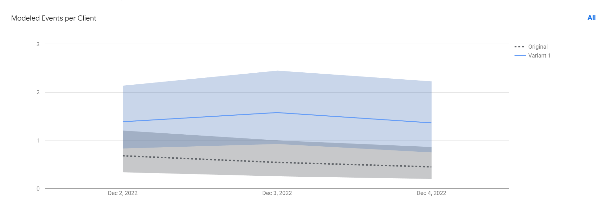

Soccer
Usability Test
Only one participant failed to complete one task during the test. Pass with star means participants met problems while completing the task, and two participants had pass with star.Dash line means that participant had failed the task. Most tasks finished fluently, but task 2 spent much more time than other tasks. They needed to register for this task, which needed more time. There were two blocks which had the time over 40 seconds. The reason of participant 1 is that he did not find the right place initially. The reason of participant 3 is that he did not know he should register.
Overall, Task 1, 3, 4 did not spend too much time. The results meet my initial expectations, because my tasks are straightforward unless the problems of design.
A/B Test
There are 13 clients engaging in the test now. Six people get the original website, and seven people get the variant 1. The calculated events per client of variant is 0.9 more than the original website. It means more people are more interested in the jersey information, If I delete the button of jersey information in main page, it may make more people to learn about the paid verification.

HERE you can see my journal: the introduction of both tests